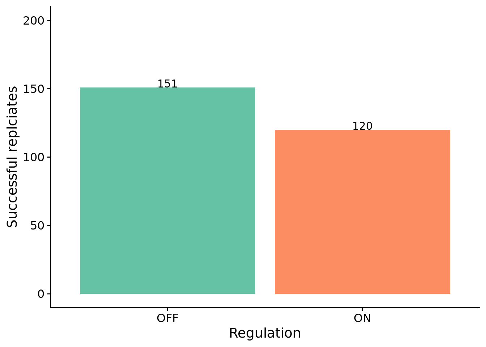
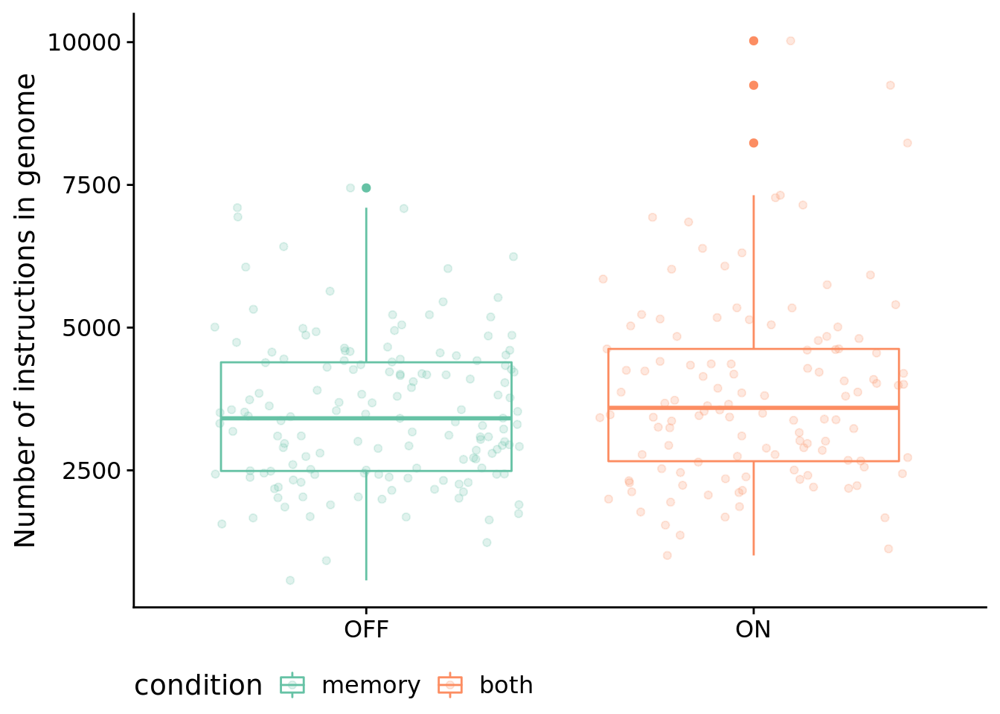
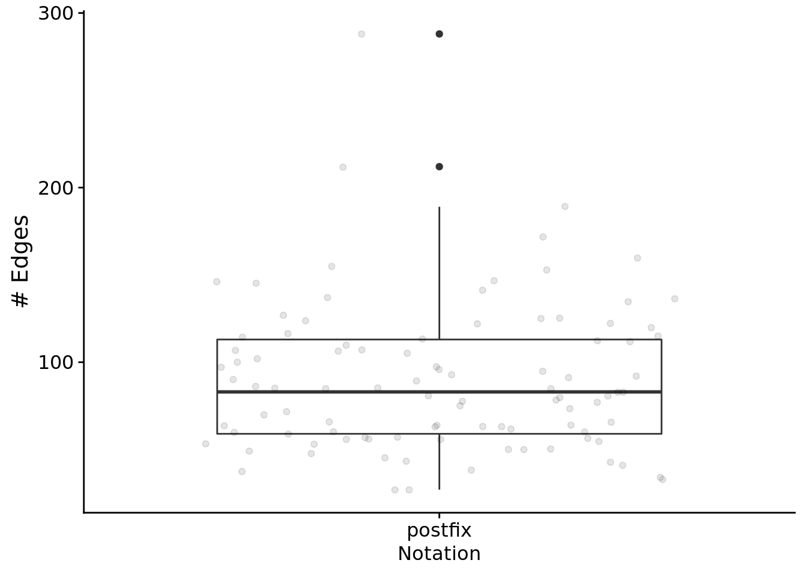
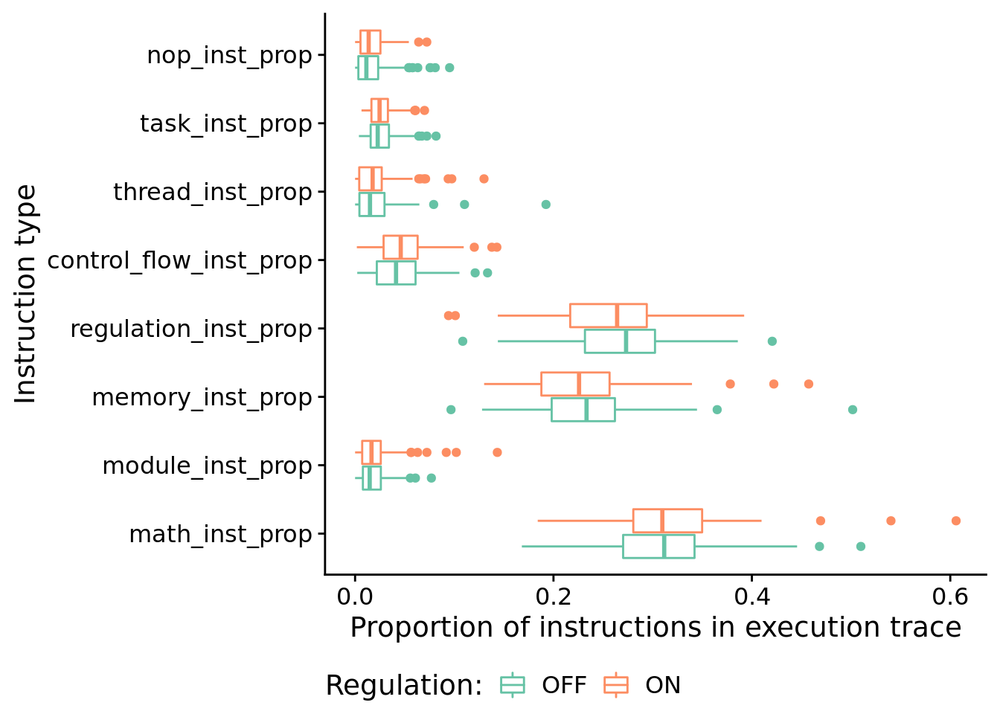
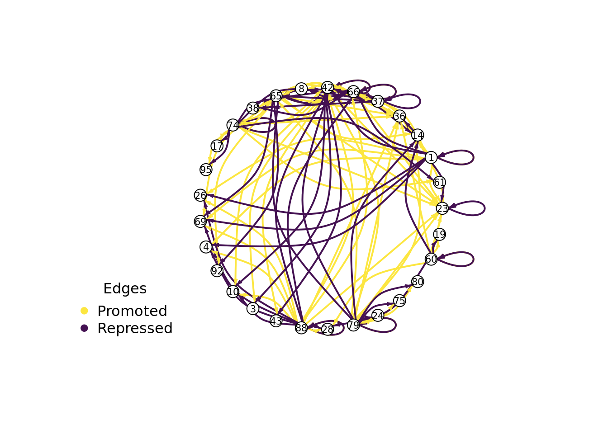

Chapter 11 Boolean calculator problem (postfix notation)
Here, we give an overview of the boolean-logic calculator problem, and we provide our data analyses for related experiments. All of our source code for statistical analyses and data visualizations is embedded in this document. The raw data can be found on the OSF project associated with this work (Lalejini, Moreno, and Ofria 2020).
Please file an issue or make a pull request on github to report any mistakes, ask questions, request more explanation, et cetera.
11.1 Overview
# Experimental parameters referenced in-text all in one convenient place.
time_steps <- 128
replicates <- 200
population_size <- 1000
generations <- 10000
# Settings for statistical analyses.
alpha <- 0.05
# Relative location of data.
working_directory <- "experiments/2020-11-28-bool-calc-postfix/analysis/" # << For bookdown
# working_directory <- "./" # << For local analysis
# Settings for visualization
cb_palette <- "Set2"
# Create directory to dump plots
dir.create(paste0(working_directory, "imgs"), showWarnings=FALSE)We use a modified version of the Boolean-logic calculator problem to further investigate the potential for our implementation of tag-based regulation to impede adaptive evolution. Our previous experiments with the Boolean-logic calculator problem provided inputs in prefix notation: the operator (e.g., AND, OR, XOR, etc.) is specified first, followed by the requisite number of numeric operands. As such, the final input signal does not differentiate which type of computation a program is expected to perform (e.g., AND, OR, XOR, etc.). This requires programs to adjust their response to the final input signal based on the context provided by the previous two signals, thereby increasing the value of regulation.
We explore whether the calculator problem’s context-dependence is driving the benefit of tag-based regulation that we identified in previous experiments. We can reduce context-dependence of the calculator problem by presenting input sequences in postfix notation. In postfix notation, programs receive the requisite numeric operand inputs first and the operator input last. As such, the final signal in an input sequence will always differentiate which bitwise operation should be performed. Successful programs must store the numeric inputs embedded in operand signals, and then, as in the independent-signal problem, a distinct signal will differentiate which of the response types a program should execute.
11.2 Analysis Dependencies
Load all required R libraries.
library(ggplot2)
library(tidyverse)
library(cowplot)
library(viridis)
library(reshape2)
library(RColorBrewer)
library(igraph)
source("https://gist.githubusercontent.com/benmarwick/2a1bb0133ff568cbe28d/raw/fb53bd97121f7f9ce947837ef1a4c65a73bffb3f/geom_flat_violin.R")These analyses were conducted in the following computing environment:
## _
## platform x86_64-pc-linux-gnu
## arch x86_64
## os linux-gnu
## system x86_64, linux-gnu
## status
## major 4
## minor 0.4
## year 2021
## month 02
## day 15
## svn rev 80002
## language R
## version.string R version 4.0.4 (2021-02-15)
## nickname Lost Library Book11.3 Setup
Load data, initial data cleanup, configure some global settings.
data_loc <- paste0(working_directory, "data/max_fit_orgs.csv")
data <- read.csv(data_loc, na.strings="NONE")
# Specify factors (not all of these matter for this set of runs).
data$matchbin_thresh <- factor(
data$matchbin_thresh,
levels=c(0, 25, 50, 75)
)
data$TAG_LEN <- factor(
data$TAG_LEN,
levels=c(32, 64, 128, 256)
)
data$notation <- factor(
data$notation,
levels=c("prefix", "postfix")
)
# Define function to summarize regulation/memory configurations.
get_con <- function(reg, mem) {
if (reg == "0" && mem == "0") {
return("none")
} else if (reg == "0" && mem=="1") {
return("memory")
} else if (reg=="1" && mem=="0") {
return("regulation")
} else if (reg=="1" && mem=="1") {
return("both")
} else {
return("UNKNOWN")
}
}
# Specify experimental condition for each datum.
data$condition <- mapply(
get_con,
data$USE_FUNC_REGULATION,
data$USE_GLOBAL_MEMORY
)
data$condition <- factor(
data$condition,
levels=c("regulation", "memory", "none", "both")
)
# Given knockout info, what strategy does a program use?
get_strategy <- function(use_reg, use_mem) {
if (use_reg=="0" && use_mem=="0") {
return("use neither")
} else if (use_reg=="0" && use_mem=="1") {
return("use memory")
} else if (use_reg=="1" && use_mem=="0") {
return("use regulation")
} else if (use_reg=="1" && use_mem=="1") {
return("use both")
} else {
return("UNKNOWN")
}
}
# Specify experimental conditions (to make labeling easier).
data$strategy <- mapply(
get_strategy,
data$relies_on_regulation,
data$relies_on_global_memory
)
data$strategy <- factor(
data$strategy,
levels=c(
"use regulation",
"use memory",
"use neither",
"use both"
)
)
# Filter data to include only replicates labeled as solutions
sol_data <- filter(data, solution=="1")
####### Load instruction execution data #######
inst_exec_data <- read.csv(paste0(working_directory, "data/exec_trace_summary.csv"), na.strings="NA")
inst_exec_data$condition <- mapply(
get_con,
inst_exec_data$USE_FUNC_REGULATION,
inst_exec_data$USE_GLOBAL_MEMORY
)
inst_exec_data$condition <- factor(
inst_exec_data$condition,
levels=c("regulation", "memory", "none", "both")
)
inst_exec_data$notation <- factor(
inst_exec_data$notation,
levels=c("prefix", "postfix")
)
####### Load network data #######
reg_network_data <- read.csv(paste0(working_directory, "data/reg_graphs_summary.csv"), na.strings="NA")
reg_network_data <- filter(reg_network_data, run_id %in% data$SEED)
get_notation <- function(seed) {
return(filter(data, SEED==seed)$notation)
}
reg_network_data$notation <- mapply(
get_notation,
reg_network_data$run_id
)
reg_network_data$notation <- factor(
reg_network_data$notation,
levels=c("prefix", "postfix")
)
####### misc #######
# Configure our default graphing theme
theme_set(theme_cowplot())11.4 Problem-solving success
The number of successful replicates by condition:
# Graph the number of solutions evolved in each condition, faceted by environmental complexity
ggplot(sol_data, aes(x=condition, fill=condition)) +
geom_bar() +
geom_text(
stat="count",
mapping=aes(label=..count..),
position=position_dodge(0.9),
vjust=0
) +
scale_x_discrete(
name="Regulation",
breaks=c("memory","both"),
labels=c("OFF", "ON")
) +
scale_fill_brewer(
palette=cb_palette
) +
ylab("Successful replciates") +
ylim(0, 200) +
theme(legend.position = "none") +
ggsave(
paste0(working_directory, "imgs/boolean-calc-postfix-solution-counts.pdf"),
width=4,
height=4
)
Test for significance using Fisher’s exact test.
# Extract successes/fails for each condition.
reg_disabled_success_cnt <- nrow(filter(sol_data, solution=="1" & condition=="memory"))
reg_disabled_fail_cnt <- replicates - reg_disabled_success_cnt
reg_enabled_success_cnt <- nrow(filter(sol_data, solution=="1" & condition=="both"))
reg_enabled_fail_cnt <- replicates - reg_enabled_success_cnt
# Regulation-disabled vs regulation-enabled
perf_table <- matrix(
c(
reg_enabled_success_cnt,
reg_disabled_success_cnt,
reg_enabled_fail_cnt,
reg_disabled_fail_cnt
),
nrow=2
)
rownames(perf_table) <- c("reg-enabled", "reg-disabled")
colnames(perf_table) <- c("success", "fail")
print(perf_table)## success fail
## reg-enabled 120 80
## reg-disabled 151 49##
## Fisher's Exact Test for Count Data
##
## data: perf_table
## p-value = 0.001286
## alternative hypothesis: true odds ratio is not equal to 1
## 95 percent confidence interval:
## 0.3093253 0.7635173
## sample estimates:
## odds ratio
## 0.487639211.5 How many generations elapse before solutions evolve?
unfinished_data <- filter(data, solution=="0")
unfinished_data$graph_update <- 12500
ggplot( ) +
geom_flat_violin(
data = sol_data,
mapping = aes(x=condition, y=update, fill=condition),
position = position_nudge(x = .2, y = 0),
alpha = .8
) +
geom_point(
data = sol_data,
aes(x=condition, y=update, color=condition),
position = position_jitter(width = .15),
size = .5,
alpha = 0.8
) +
geom_point(
data = unfinished_data,
mapping=aes(x=condition, y=graph_update),
color="gray",
position = position_jitter(width = .15, height=500),
size = .5,
alpha = 0.8
) +
geom_boxplot(
data = sol_data,
mapping = aes(x=condition, y=update, fill=condition),
width = .1,
outlier.shape = NA,
alpha = 0.5
) +
scale_x_discrete(
name="Regulation",
breaks=c("memory", "both"),
labels=c("OFF", "ON")
) +
scale_color_brewer(
palette=cb_palette
) +
scale_fill_brewer(
palette=cb_palette
) +
scale_y_continuous(
name="Generation first solution evolved",
limits=c(0, 13000),
breaks=c(0, 2500, 5000, 7500, 10000, 12500),
labels=c("0", "2500", "5000", "7500", "10000", "Unsolved")
) +
# coord_flip() +
guides(fill = FALSE) +
guides(color = FALSE) +
ggsave(
paste0(working_directory, "imgs/boolean-calc-postfix-solve-time-cloud.pdf"),
width=4,
height=4
)Test for statistical difference between conditions using a Wilcoxon rank sum test.
##
## Wilcoxon rank sum test with continuity correction
##
## data: update by condition
## W = 7175.5, p-value = 0.003285
## alternative hypothesis: true location shift is not equal to 0
## 95 percent confidence interval:
## -1422 -310
## sample estimates:
## difference in location
## -87211.6 Evolved strategies
11.6.1 Program length
How long (i.e., total number of instructions) are solutions?
ggplot( sol_data, aes(x=condition, y=num_instructions, color=condition) ) +
geom_boxplot() +
geom_jitter(alpha=0.2) +
ylab("Number of instructions in genome") +
scale_color_discrete(
name="Condition",
breaks=c("memory", "both"),
labels=c("Regulation-off (OFF)", "Regulation-on (ON)")
) +
scale_x_discrete(
name="Condition",
breaks=c("memory", "both"),
labels=c("OFF", "ON")
) +
scale_color_brewer(
palette=cb_palette
) +
theme(
legend.position="bottom",
axis.title.x=element_blank()
)## Scale for 'colour' is already present. Adding another scale for 'colour',
## which will replace the existing scale.
11.6.2 What mechanisms do programs rely on to adjust responses to signals over time?
We used indpendent knockouts of tag-based genetic regulation and global memory buffer access to investigate the mechanisms underpinning successful programs.
ggplot( sol_data, mapping=aes(x=condition, fill=strategy) ) +
geom_bar(
position="fill",
stat="count"
) +
geom_text(
stat='count',
mapping=aes(label=..count..),
position=position_fill(vjust=0.05)
) +
ylab("% of Solutions") +
scale_fill_brewer(
name="Strategy:",
breaks=c(
"use memory",
"use regulation",
"use neither",
"use both"
),
limits=c(
"use memory",
"use regulation",
"use neither",
"use both"
),
labels=c(
"Memory (only)",
"Regulation (only)",
"Neither",
"Both"
),
palette=cb_palette
) +
scale_x_discrete(
name="Regulation",
breaks=c("memory", "both"),
labels=c("OFF", "ON")
) +
theme(legend.position = "bottom")
11.6.3 Gene regulatory networks
Looking only at successful programs that rely on regulation. At a glance, what do gene regulatory networks look like?
First, the total edges found in networks:
relies_on_reg <- filter(
sol_data,
relies_on_regulation=="1"
)$SEED
ggplot( filter(reg_network_data, run_id %in% relies_on_reg), aes(x=notation, y=edge_cnt) ) +
geom_boxplot() +
geom_jitter(alpha=0.1) +
xlab("Notation") +
ylab("# Edges") +
theme(
legend.position="bottom",
legend.text=element_text(size=9),
legend.title=element_text(size=10),
axis.title.x=element_text(size=12)
) +
ggsave(
paste0(working_directory, "imgs/boolean-calc-postfix-regulation-edges.png"),
width=4,
height=3
)
Next, let’s look at edges by type.
# Process/cleanup the network data
melted_network_data <- melt(
filter(reg_network_data,
run_id %in% relies_on_reg
),
variable.name = "reg_edge_type",
value.name = "reg_edges_cnt",
measure.vars=c("repressed_edges_cnt", "promoted_edges_cnt")
)
ggplot( melted_network_data, aes(x=reg_edge_type, y=reg_edges_cnt, color=reg_edge_type) ) +
geom_boxplot() +
geom_jitter(alpha=0.2) +
xlab("Environmental Complexity") +
ylab("# Edges") +
scale_x_discrete(
name="Edge type",
limits=c("repressed_edges_cnt", "promoted_edges_cnt"),
labels=c("Repressing edges", "Promoting edges")
) +
scale_color_brewer(
palette=cb_palette
) +
theme(
legend.position="none",
legend.text=element_text(size=9),
legend.title=element_text(size=10),
axis.title.x=element_text(size=12)
) +
ggsave(
paste0(working_directory, "imgs/boolean-calc-postfix-regulation-edge-types.png"),
width=4,
height=3
)
Test for a statistical difference between edge types using a wilcoxon rank sum test:
print(
paste0(
"Median # repressed edges: ",
median(filter(melted_network_data, reg_edge_type=="repressed_edges_cnt")$reg_edges_cnt)
)
)## [1] "Median # repressed edges: 41"print(
paste0(
"Median # promoting edges: ",
median(filter(melted_network_data, reg_edge_type=="promoted_edges_cnt")$reg_edges_cnt)
)
)## [1] "Median # promoting edges: 43"##
## Wilcoxon signed rank test with continuity correction
##
## data: reg_edges_cnt by reg_edge_type
## V = 1550.5, p-value = 0.02192
## alternative hypothesis: true location shift is not equal to 0
## 95 percent confidence interval:
## -4.000025 -0.499968
## sample estimates:
## (pseudo)median
## -2.00001811.6.4 Program instruction execution traces
11.6.4.1 Execution time
How many time steps do successful programs take to solve the boolean calculator problem?
# only want solutions
solutions_inst_exec_data <- filter(inst_exec_data, SEED %in% sol_data$SEED)
ggplot( solutions_inst_exec_data, aes(x=condition, y=total_execution_time, color=condition) ) +
geom_boxplot() +
geom_jitter(alpha=0.2) +
scale_x_discrete(
name="Regulation",
breaks=c("memory", "both"),
labels=c("OFF", "ON")
) +
scale_color_brewer(
palette=cb_palette
) +
theme(
legend.position="none"
)
Test for significant difference between conditions using Wilcoxon rank sum test:
print(
wilcox.test(
formula=total_execution_time~condition,
data=filter(solutions_inst_exec_data),
exact=FALSE,
conf.int=TRUE,
paired=FALSE
)
)##
## Wilcoxon rank sum test with continuity correction
##
## data: total_execution_time by condition
## W = 9737, p-value = 0.2912
## alternative hypothesis: true location shift is not equal to 0
## 95 percent confidence interval:
## -78.00002 274.00000
## sample estimates:
## difference in location
## 96.0000411.6.4.2 What types of instructions to successful programs execute?
Here, we look at the distribution of instruction types executed by successful programs. We’re primarily interested in the proportion of control flow instructions, so let’s look at that first.
ggplot( solutions_inst_exec_data, aes(x=condition, y=control_flow_inst_prop, color=condition) ) +
geom_boxplot() +
geom_jitter(alpha=0.2) +
scale_x_discrete(
name="Regulation",
breaks=c("memory", "both"),
labels=c("OFF", "ON")
) +
scale_color_brewer(
palette=cb_palette
) +
ylab("Proportion of executed flow control instructions") +
theme(
legend.position="bottom",
axis.title.x=element_blank()
)
Test for significant difference between conditions using a Wilcoxon rank sum test:
print(
wilcox.test(
formula=control_flow_inst_prop~condition,
data=filter(solutions_inst_exec_data),
exact=FALSE,
conf.int=TRUE,
paired=FALSE
)
)##
## Wilcoxon rank sum test with continuity correction
##
## data: control_flow_inst_prop by condition
## W = 8043, p-value = 0.1127
## alternative hypothesis: true location shift is not equal to 0
## 95 percent confidence interval:
## -0.011679066 0.001195076
## sample estimates:
## difference in location
## -0.00543344In case you’re curious, here’s all categories of instructions:
melted <- melt(
solutions_inst_exec_data,
variable.name = "inst_type",
value.name = "inst_type_prop",
measure.vars=c(
"math_inst_prop",
"module_inst_prop",
"memory_inst_prop",
"regulation_inst_prop",
"control_flow_inst_prop",
"thread_inst_prop",
"task_inst_prop",
"nop_inst_prop"
)
)
ggplot( melted, aes(x=inst_type, y=inst_type_prop, color=condition) ) +
geom_boxplot() +
scale_color_brewer(
name="Regulation:",
breaks=c("memory", "both"),
labels=c("OFF", "ON"),
palette=cb_palette
) +
xlab("Instruction type") +
ylab("Proportion of instructions in execution trace") +
coord_flip() +
theme(legend.position="bottom")
11.7 Visualizaing an evolved regulatory network
Let’s take a closer look at a successful gene regulatory network.
Specifically, we’ll be looking at the solution evolved in run id 2.539210^{4} (arbitrarily selected).
11.7.1 Evolved regulatory network
We use the igraph package to draw this program’s gene regulatory network.
# Networks!
graph_nodes_loc <- paste0(working_directory, "data/igraphs/reg_graph_id-", trace_id, "_nodes.csv")
graph_edges_loc <- paste0(working_directory, "data/igraphs/reg_graph_id-", trace_id, "_edges.csv")
graph_nodes_data <- read.csv(graph_nodes_loc, na.strings="NONE")
graph_edges_data <- read.csv(graph_edges_loc, na.strings="NONE")
network <- graph_from_data_frame(
d=graph_edges_data,
vertices=graph_nodes_data,
directed=TRUE
)
# Setup edge styling
E(network)$color[E(network)$type == "promote"] <- "#FCE640"
E(network)$lty[E(network)$type == "promote"] <- 1
E(network)$color[E(network)$type == "repress"] <- "#441152"
E(network)$lty[E(network)$type == "repress"] <- 1
network_out_name <- paste0(working_directory, "imgs/case-study-id-", trace_id, "-network.svg")
draw_network <- function(net, write_out, out_name) {
if (write_out) {
svg(out_name, width=4,height=1.5)
# bottom, left, top, right
par(mar=c(0.2,0,1,0.5))
}
plot(
net,
edge.arrow.size=0.4,
edge.arrow.width=0.75,
edge.width=2,
vertex.size=10,
vertex.label.cex=0.65,
curved=TRUE,
vertex.color="grey99",
vertex.label.color="black",
vertex.label.family="sans",
layout=layout.circle(net)
)
legend(
x = "bottomleft", ## position, also takes x,y coordinates
legend = c("Promoted", "Repressed"),
pch = 19, ## legend symbols see ?points
col = c("#FCE640", "#441152"),
bty = "n",
border="black",
xpd=TRUE,
title = "Edges"
)
if (write_out) {
dev.flush()
dev.off()
}
}
draw_network(network, TRUE, network_out_name)## png
## 2
References
Lalejini, Alexander M, Matthew A Moreno, and Charles Ofria. 2020. “Tag-Based Genetic Regulation for Genetic Programming.” OSF. https://doi.org/10.17605/OSF.IO/928FX.